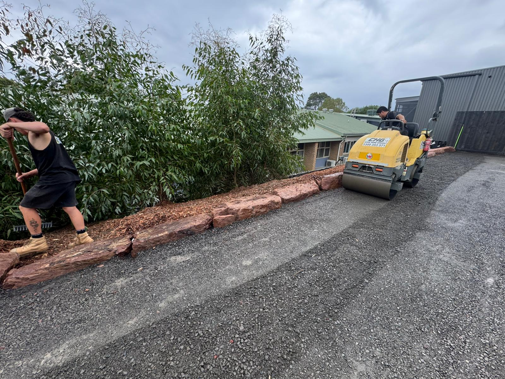
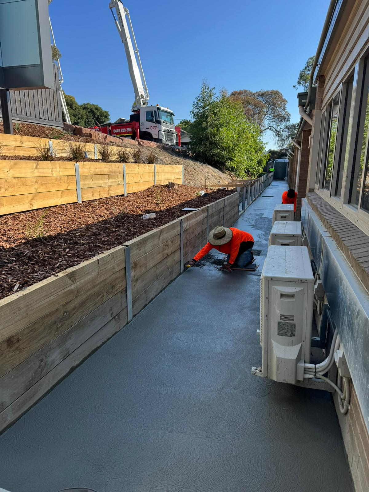
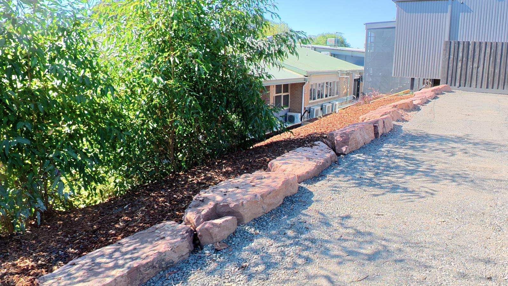
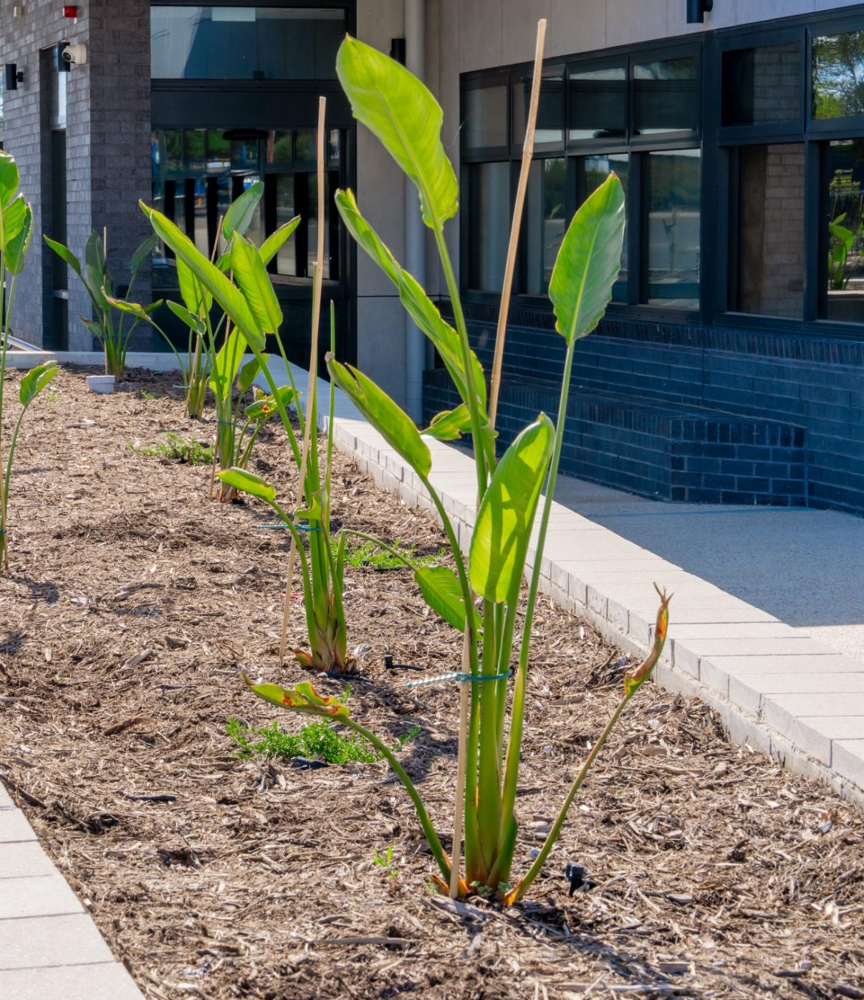
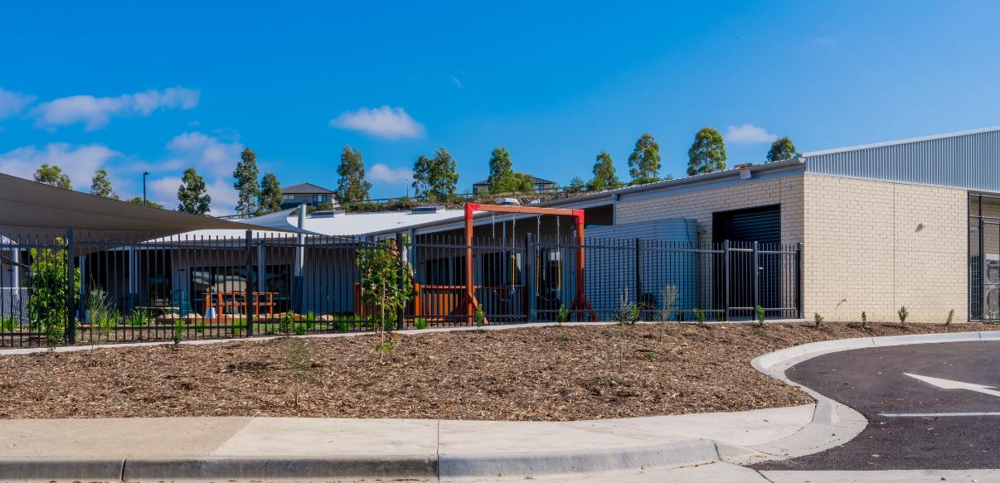
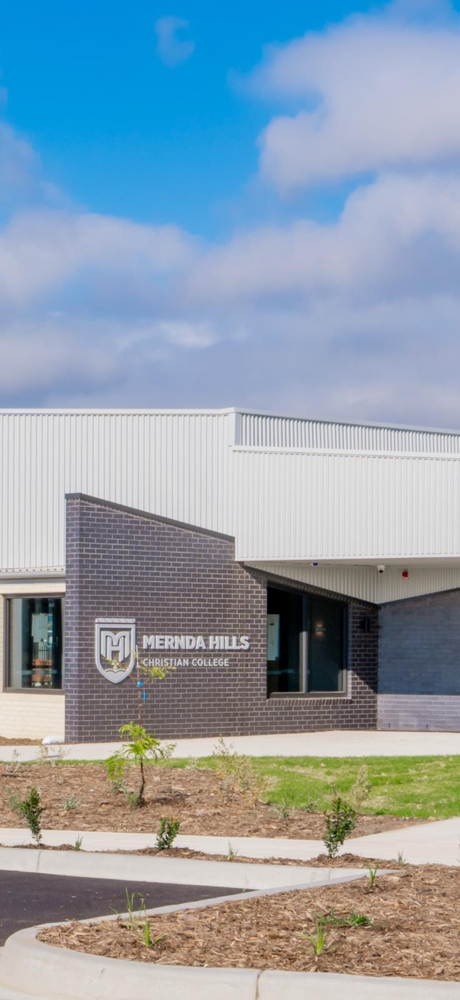
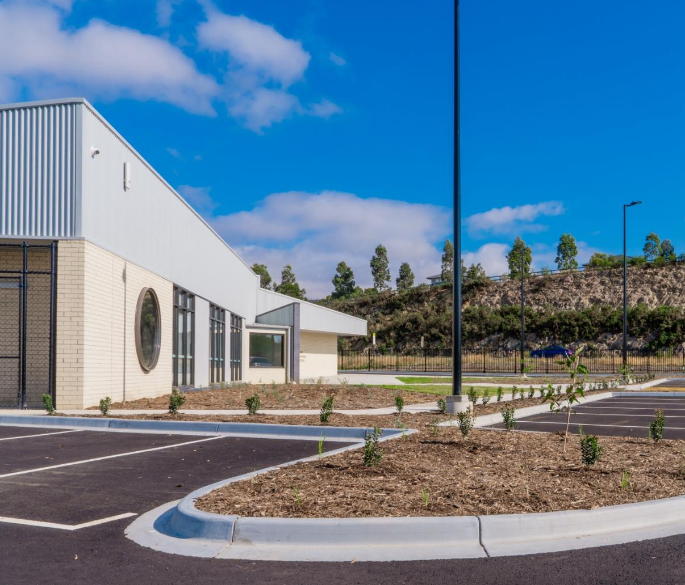
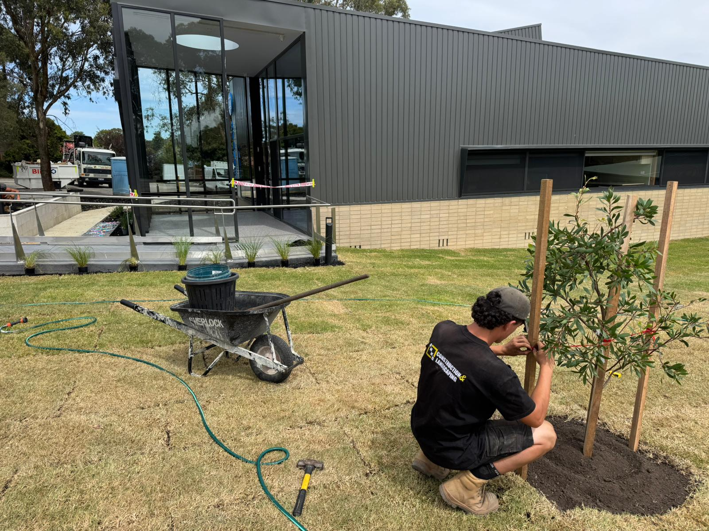
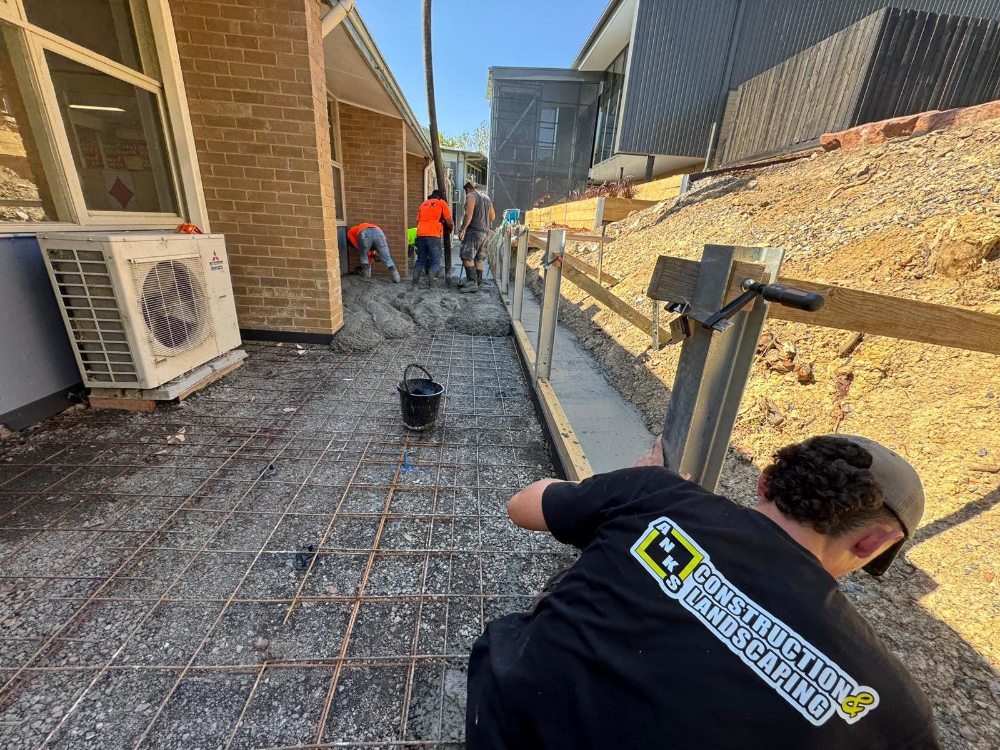
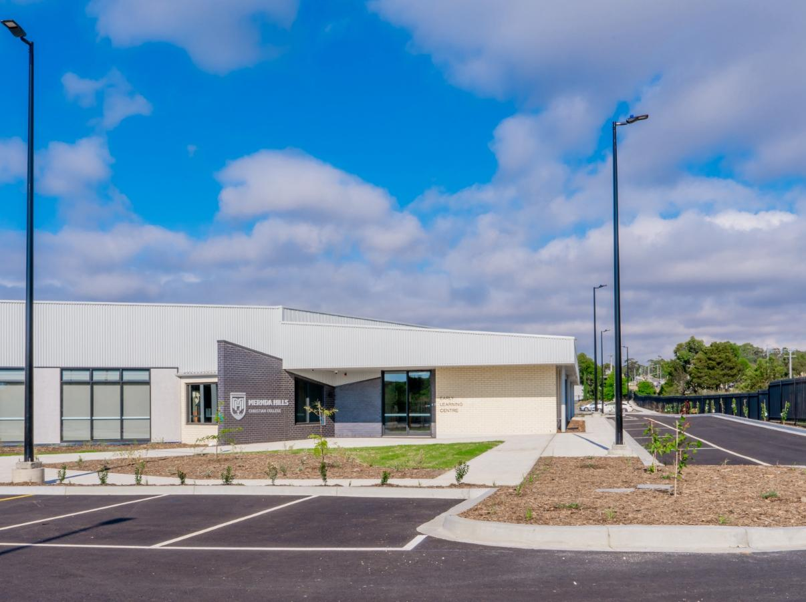

Site safety & WHS
Fenced compounds, traffic management plans and SWMS documentation. Working alongside active classrooms, public users and live commercial operations.
Commercial · Schools, public spaces and complex sites
We deliver landscape construction across schools, childcare, public spaces, streetscapes and complex commercial environments throughout Victoria. Safety, compliance and stakeholder management built into every stage of the programme.
One in-house team across earthworks, structure and finishing. Programme-driven delivery on active and sensitive sites.
The brief
Commercial landscape construction is rarely just about the landscape. School grounds work runs through term breaks while classrooms operate next door. Public realm works coordinate with council, traffic management and the public moving through the site every day. Childcare and community facilities need fenced compounds, sign-off documentation and inspections at every milestone.
ANKS is built for this. We run programmes against fixed completion dates, coordinate with principals, business managers and project consultants, and deliver the works without becoming the reason a stage opens late. Safety, compliance and communication are not extras on top of the build, they are how we build.

Scope

Fenced compounds, traffic management plans and SWMS documentation. Working alongside active classrooms, public users and live commercial operations.

Bulk and detail excavation, drainage, sub-base, paving, kerbs and driveways. The infrastructure that carries the finished landscape.

Sandstone, boulder, timber and concrete retaining. Tiered beds, embankments and structural elements that shape graded sites.

Shade trees, hedging, garden beds, ground cover and turf. Planting selected for the way it establishes in commercial settings.

Shade sails, fencing, signage, bollards, edging and finishing details. The final layer that brings the commercial site into use.

Milestones tracked to the day, defects and snag resolution before handover, and warranty documentation aligned with consultant requirements.
Who we work with
For schools & education
Primary, secondary, childcare and early learning facilities. We programme around term times, staged occupation and active classrooms, and deliver the works without disrupting the day-to-day running of the site.
For councils & public realm
Council streetscape works, parks, public realm upgrades and community facilities. We deliver against community programmes, coordinate with engineering and arborist consultants, and manage the public moving through the site each day.
For commercial developers
Mixed-use, hospitality, healthcare, retail and office developments. We deliver the external works package on programme, integrate with main contractor schedules and hand over a site ready for tenancy and operation.




Where we work
Commercial work takes us further afield than residential. We deliver across metropolitan Melbourne and into regional Victoria, with recent projects at Mernda Hills College and St James Primary, Vermont.
Recent commercial work
Available across the metropolitan north, east and south-east, plus regional Victoria and the Murray region.
Common questions
Yes. The majority of our commercial work is delivered around active classrooms, operating businesses or live public spaces. We work to fenced compounds, traffic management plans and SWMS documentation, and stage the works to keep the site running through delivery.
Yes. We handle council, DET and other authority approvals where the project requires them, coordinate with consultants on specifications and certifications, and provide the compliance documentation needed for handover and sign-off.
One nominated project lead from our side carries the relationship through the build. Principals, business managers, project consultants and main contractors all have a single point of contact, weekly updates and clear escalation paths.
From single-stage grounds works on a primary school through to multi-stage external works packages on larger commercial developments. We are comfortable with both fixed-price and schedule-of-rates contracts depending on the project structure.
Walk-through inspection with the consultant team, snag-list resolution before practical completion, defects period coordination, warranty documentation and maintenance guidance for the planting and finishes. We stay available during the establishment period.